Contributing to WordPress Core
Moving beyond your first patch
A workshop by @felixarntz-
Make WordPress Core
- Blog
- Tickets
- Components
- Handbook
-
WordPress Core Trac
- Managing tickets
- Finding tickets
- Creating patches
-
WordPress Slack
- Channels
- Meetings
- Bug Scrubs
Your key to the gate: A wordpress.org account
- Grants you access to opening tickets, submitting patches, publishing plugins and themes, translating, slacking, ... - everything!
- If you do not already have an account, create one at https://login.wordpress.org/register. Reminder: You can never change your username, so choose a good one!
Make WordPress Core
https://make.wordpress.org/core/Blog

Subscribe to this blog to know about anything important
that happens in core development!
Tickets
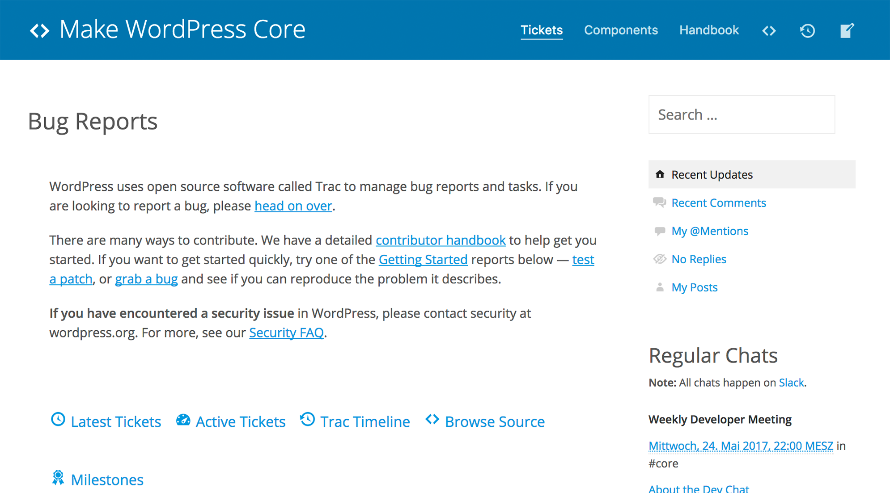
Here is where you get a good first overview about tickets,
categorized by important metrics.
Components
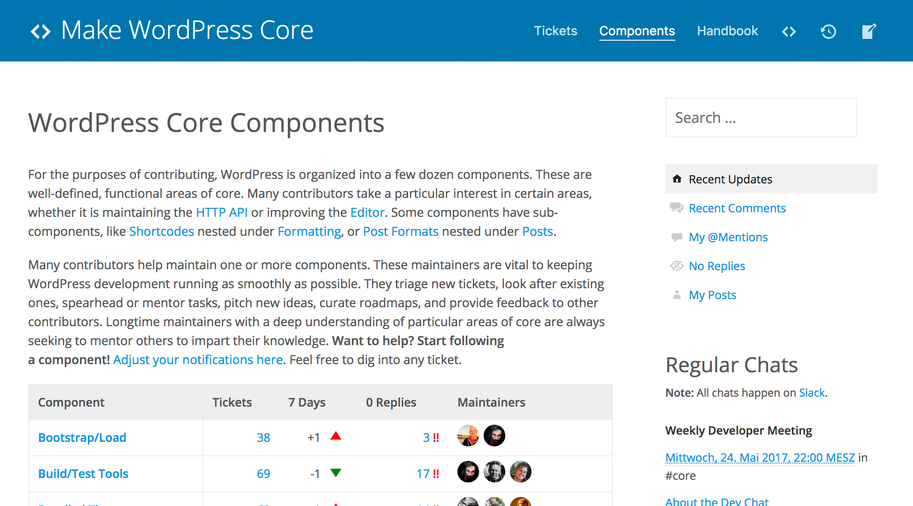
You should find a component that interests you
and focus on in it order to streamline your efforts.
Handbook
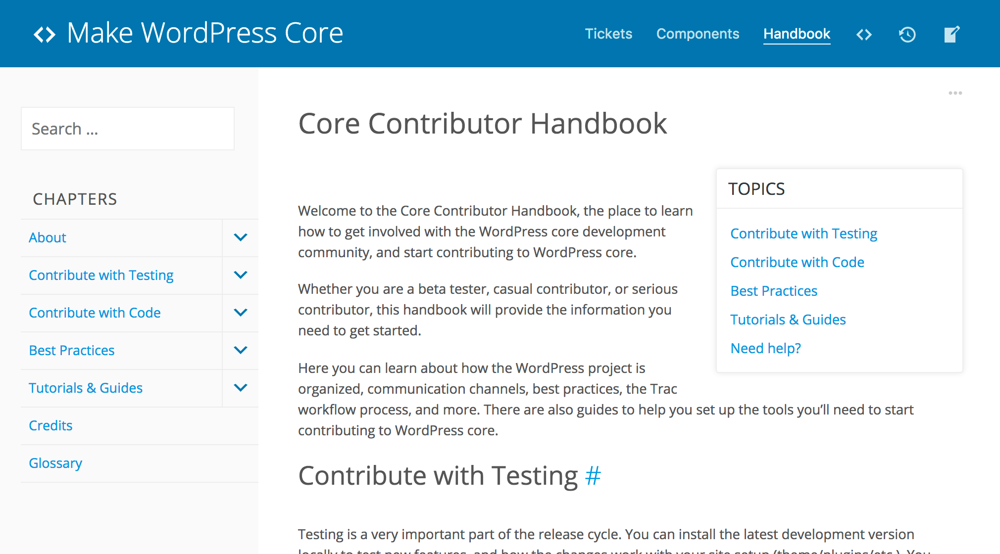
Your source of information for everything related to contributing to core.
Learn the WordPress philosophies!
WordPress Core Trac
https://core.trac.wordpress.orgManaging tickets
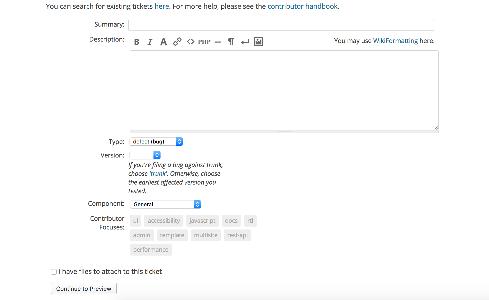- Brief summary of the ticket description.
-
Best practice: If you're filing a bug, describe what's wrong.
→ Example: "HTML comments in posts aren't handled correctly" -
Best practice: If you're filing an enhancement or feature request, use a call-to-action-type direction.
→ Example: "Encourage people to change default tagline"
- Ticket content: May be as long or as short as you like, but be precise.
- Best practice: Do not use empty phrases, be on point. Tone on Trac is rather formal, so try to avoid things like "I would love to see this!" or similar.
-
Pro tip: You may reference another ticket by entering
#{ticket_id}, and it will automatically become a link.
→ Example: "This was previously discussed in #40000." -
Pro tip: You may reference a specific changeset by entering
[{changeset_id}], and it will automatically become a link.
→ Example: "The original bug was fixed in [40000]."
- Ticket type: Either defect (bug), enhancement or feature request.
- The vast majority of tickets are for bugs or enhancements.
-
It's usually not a good idea to open a feature request ticket out of the blue. New feature ideas should be discussed in advance with others and only be transformed into a ticket once the idea has enough traction to be viable for a possible inclusion in WordPress core.
→ Furthermore, new features need to go through a special feature project workflow. See https://make.wordpress.org/core/features/ and https://make.wordpress.org/core/2016/03/31/iterating-on-feature-plugins/ for more information. - There is a fourth ticket type called task (blessed). It is only available to component maintainers and committers and is intended to be used for task tickets, i.e. tickets that usually span multiple smaller sub-tickets to reach a bigger goal.
- This field should only be used when filing a bug.
- It should contain the number of the earliest version where the bug occurred. This is not necessarily the version of WordPress you are using.
- If you're not sure which version to enter, leave the field blank, so someone else can add the information later.
-
Pro tip: If you already know where in the code the bug is coming from, you can use
svn blame {file}@r{changeset_id} | lessto work your way backwards and find out the earliest affected version.
→ Example:svn blame src/wp-includes/post.php@r40000 | less
You can then use400Gto go to line 400 and see the changeset number when that line was last changed.
- The component to which the ticket belongs.
- If it affects multiple components, choose the one it affects the most. You may further specify the related area by using focuses.
- A focus is something more general that usually spans across many, if not all WordPress core components.
- While specifying a component is required, focuses are optional.
-
If you file a ticket relates to multiple components and one of them is also available as a focus, use a mixture of component and focuses.
→ Example: If you want to file a bug in the REST API taxonomy controller, use the Taxonomy component and the rest-api focus.
The advanced New Ticket form
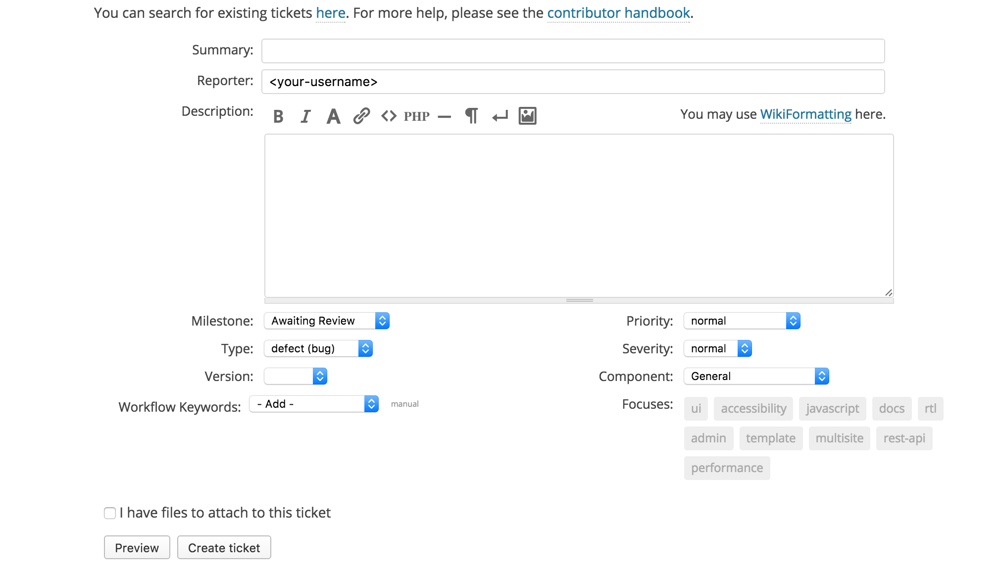- The milestone to which to assign the tickets. You may specify Awaiting Review, Future Release, the next major release or next minor release.
- When opening a ticket, you should usually keep this on Awaiting Review and ask for some initial feedback - especially if you're not filing a clear bug for which WordPress core is responsible.
- Minor releases should only be used to fix regressions (bugs) from the latest major release. This has changed a bit since the new release cycle, but it's still something to strive for.
- Best practice: Only assign tickets to the upcoming release if sufficient discussions have already happened and you consider it realistic for the changes to be done in time.
- Best practice: If you close a ticket without a successful resolution (more on that later), you should completely remove any milestone from the ticket.
- Specify one or more keywords to indicate the current status of the ticket and required steps.
- This is supposed to be dynamic throughout the ticket's lifecycle, so you can (and should) change it after opening the ticket as necessary.
-
Available keywords are:
- has-patch: A working patch has been uploaded.
- needs-patch: The ticket still requires a working patch.
- needs-refresh: There is a working patch, but the circumstances have changed, so a new patch is required.
- reporter-feedback: Feedback by the person who opened the ticket requested.
- dev-feedback: Feedback by developers requested, for example to review a patch.
- 2nd-opinion: Feedback requested for concepts / ideas, to start a discussion.
- close: The ticket should probably be closed, but another voice would be welcome.
- needs-testing: The patch on the ticket needs to be thoroughly tested (usually used for new features).
- ui-feedback: Feedback requested for the UI changes the ticket deals with.
- ux-feedback: Feedback requested for the UX changes the ticket deals with.
- has-unit-tests: Comprehensive unit tests have been uploaded for the ticket.
- needs-unit-tests: The ticket still requires unit tests.
- needs-docs: The patch on the ticket still needs proper documentation.
- needs-codex: The changes from the ticket require changes in the WordPress Codex.
- has-screenshots: Screenshots for UI issues / changes have been uploaded.
- needs-screenshots: The ticket still requires screenshots for UI issues / changes.
- commit: The ticket, patch and everything related has been properly reviewed and is ready for commit.
- early: The changes proposed in the ticket should be committed early in a release cycle to allow for thorough testing.
- i18n-change: The changes in the ticket include i18n string changes.
- good-first-bug: The ticket qualifies as a bug that should be relatively easy to fix for new contributors. Experienced contributors should preferably keep off, unless it's urgent.
- fixed-major: The ticket has already been fixed in trunk, but requires back-porting to an older release.
- The priority of the ticket. Can be normal, low, high, lowest or highest omg bbq. No, this is not a joke. 🔥
- Always keep this at normal, unless specific circumstances dictate the value to be different or the ticket changes are nit-picking and not really needed.
- Don't ever use this to mark something as important because you want it to happen!
- The severity of the ticket, if it is a bug. Can be normal, major, minor, trivial, critical or blocker.
- Should usually remain normal as well. critical can be used if the bug needs to be fixed as soon as possible, while blocker indicates that it should be fixed soon so that work on another related ticket can proceed.
- Again, don't ever use this to mark something as important because you want it to happen!
Ticket Statuses
When you open a new ticket, its initial status will always be set to new.
There are a few more statuses however:
- accepted: The changes proposed by the ticket are accepted for a future merge. Used rarely, as this is mostly implicit by the comments on the ticket.
- assigned: The ticket is assigned to an owner who will take care of the necessary work.
- closed: The ticket has been closed with a specific resolution, either as fixed or a negative resolution.
- reopened: The ticket had already been closed, but was reopened because it was not actually completed properly.
- reviewing: The ticket has an owner who will review the changes.
Ticket Resolutions
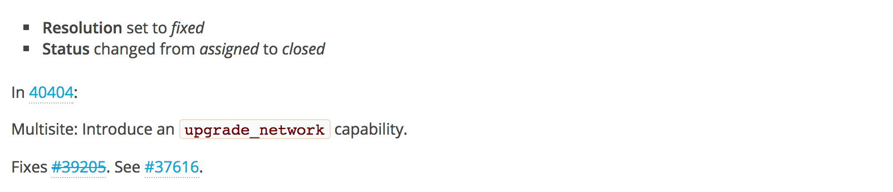A ticket is automatically closed as fixed, when a commit message contains the phrase "Fixes #{ticket_id}.".
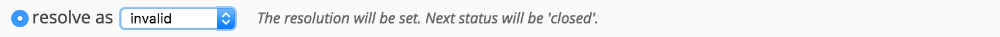If a ticket should not be fixed for a specific reason, it can be manually be closed with a proper resolution:
- invalid: The ticket was not opened for a valid reason, for example when a bug only occurred because the reporter or a plugin clearly did something wrong.
- wontfix: This may be considered a bug, but is not critical and cannot be fixed for (usually complex) legacy reasons.
- worksforme: The issue described in the ticket cannot be recreated.
- maybelater: This may be considered a bug, but is not critical and involves too heavy changes compared to the benefits. It may be reconsidered later.
Finding tickets
There are currently over 4700 open tickets in WordPress Trac.
→ How do you find the ones that you wanna work on?
A good starting point: https://make.wordpress.org/core/reports/
Reports
Reports are lists of tickets to which certain predefined criteria apply. Examples:
- All open tickets that are scheduled for the next major release.
- All open tickets that deal with the Customizer.
- All open tickets that need unit tests.
- All open tickets that are good for new contributors.
- All open tickets that are ready for commit.
- All open bug tickets that have been reported against trunk.
→ Can you name the criteria (from our previous Managing tickets section) that a ticket needs to match in order to fall under each of the above reports respectively?
Example: All open tickets that are scheduled for the next major release.
- Status: new, accepted, assigned, reopened or reviewing
- Milestone: 4.9
All open tickets that deal with the Customizer.
- Status: new, accepted, assigned, reopened or reviewing
- Component: Customize
All open tickets that need unit tests.
- Status: new, accepted, assigned, reopened or reviewing
- Keywords: must contain needs-unit-tests
All open tickets that are good for new contributors.
- Status: new, accepted, assigned, reopened or reviewing
- Keywords: must contain good-first-bug
All open tickets that are ready for commit.
- Status: new, accepted, assigned, reopened or reviewing
- Keywords: must contain commit
All open bug tickets that have been reported against trunk.
- Status: new, accepted, assigned, reopened or reviewing
- Type: defect (bug)
- Version: trunk
The full list of available reports can be found at https://core.trac.wordpress.org/report.
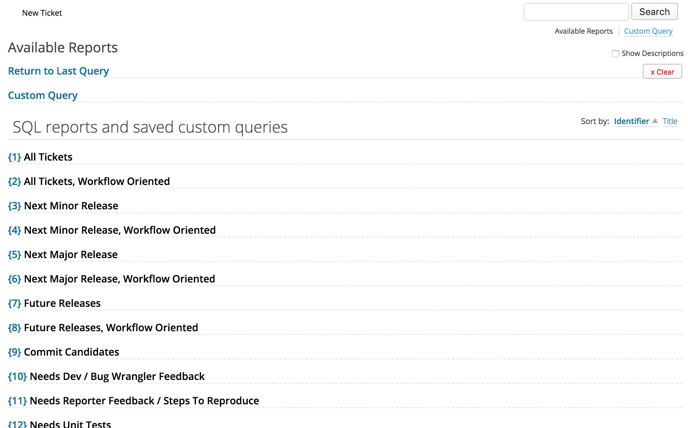Dynamic Reports
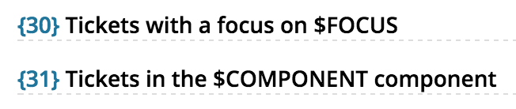Some reports require a dynamic parameter. Example usages:
- https://core.trac.wordpress.org/report/30?FOCUS=rest-api
- https://core.trac.wordpress.org/report/31?COMPONENT=Taxonomy
Some reports support an optional dynamic parameter. Example usages:
Your most powerful tool: https://core.trac.wordpress.org/query
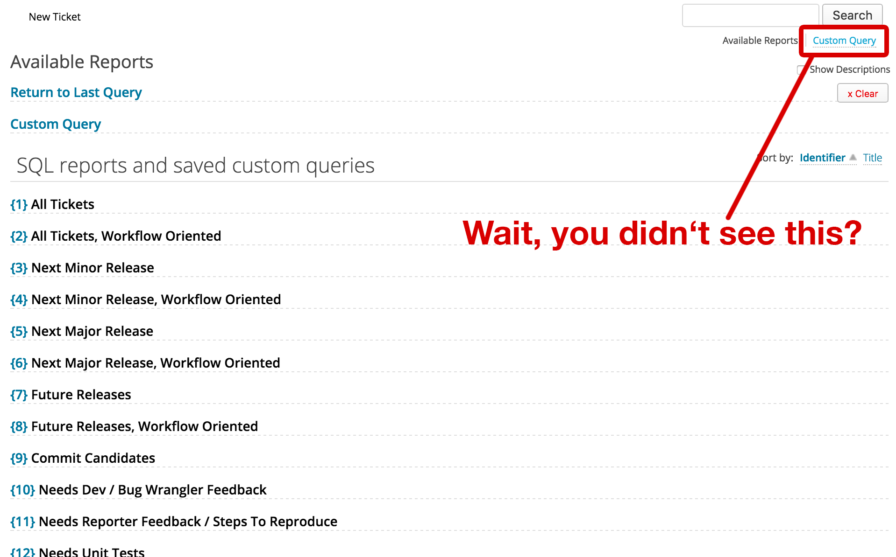Query
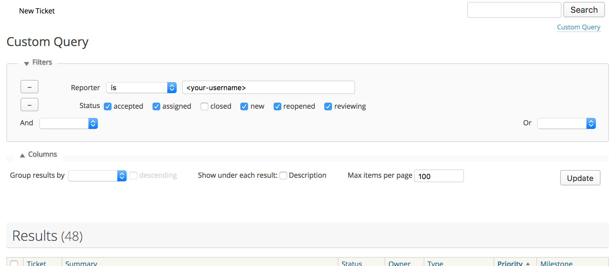This page allows you to query by any information available with granular control about relations, columns to show and orderby field.
Example: All open tickets that are scheduled for the next major release.
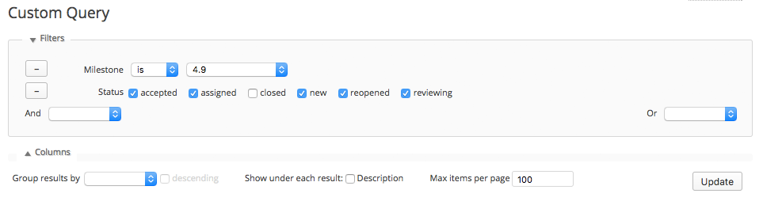Can you generate the following reports by using the custom query feature?
- All open tickets that deal with the Customizer.
- All open tickets that need unit tests.
- All open tickets that are good for new contributors.
- All open tickets that are ready for commit.
- All open bug tickets that have been reported against trunk.
- All open tickets that are in the REST API component or have the rest-api focus.
All open tickets that deal with the Customizer.
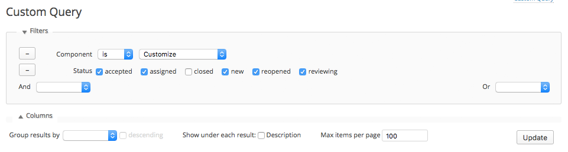All open tickets that need unit tests.
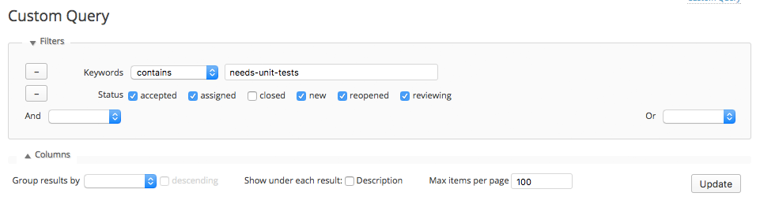All open tickets that are good for new contributors.
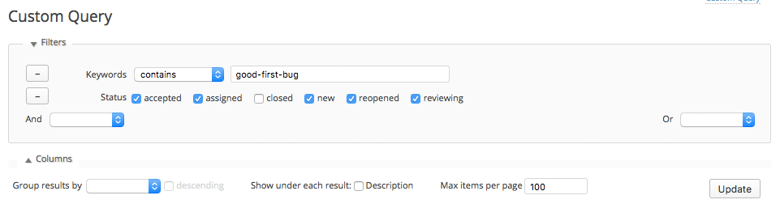All open tickets that are ready for commit.
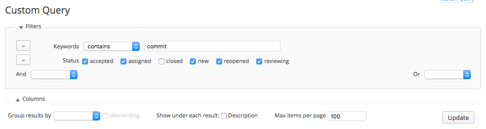All open bug tickets that have been reported against trunk.
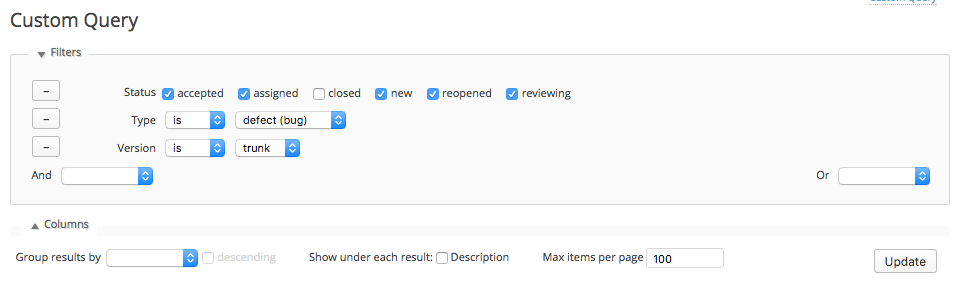All open tickets that are in the REST API component or have the rest-api focus.
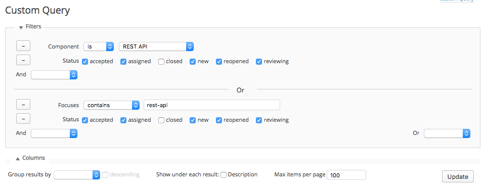Pro tip: Now that you know how to use Trac's powerful query functionality, try to figure out over time which queries are useful to you regularly, and bookmark them for quick access.
Trac notifications
Once you open a ticket or comment on a ticket, you will automatically receive emails when that ticket is updated. In addition, you may manually subscribe to any ticket you're interested in.
But wait, there's more...
- On that page you can check components and focuses that you would like to receive all ticket updates for.
-
You could also subscribe to the "firehose", so that you receive emails for every update on every ticket.
→ Go ahead if you wanna spend your entire life on WordPress. 🤡
Creating patches
Patches are the code changes that are uploaded to the related ticket as attachments.
→ How do you do it right?
The workflow for creating a patch
Either download and apply the patch manually and upload your new patch manually, or do it like a pro...
svn update
grunt patch:12345
# Do the code changes you need.
grunt upload_patch:12345
svn revert -R *
If you wanna upload the patch manually, use svn diff > 12345.diff and then upload the file as an attachment to the ticket manually.
Best practices for writing patches
- Creating a patch should usually be one of the last things you do in a ticket lifecycle. Of course, you can always write a patch to have a better explanation of what you're trying to achieve, but keep in mind that it might not be accepted.
- Be patient, consider and discuss edge-cases. Letting a problem sink in for a while will improve the outcome.
-
Name your patch after the ticket number and use the
.difffile extension in favor of.patch. If there are multiple patches on the ticket, an index number will automatically be appended once the patch is uploaded.
Writing a comment for the patch
- After uploading a patch, always leave a comment on the ticket describing what you changed and why you changed it. A patch upload itself does not trigger a notification, and furthermore people wouldn't know the reasoning behind your changes.
-
Pro tip: Use
[attachment:{filename}]to directly reference a specific patch on the ticket, and it will be automatically transformed into a link. -
Make sure to adjust the keywords as necessary:
- Add the has-patch keyword if you uploaded the initial patch.
- Add the has-unit-tests keyword if your patch already contains sufficient unit tests.
- Use the dev-feedback keyword if the patch is rather complex and could use thorough feedback on the approach.
Dealing with feedback
- If nobody responds to the ideas from your ticket or reviews your patch, it may be useful to bring that ticket forward in a related chat (more on that in just a bit). Make sure to ask kindly though, and don't annoy people. They're usually busy.
- If the consensus is that your idea is not viable for inclusion in WordPress core, or if your patch does not fulfill the discussed requirements, stay focused. It is easy to get frustrated by such decisions. Try to move the discussion forward in a constructive way.
- If you feel like your idea was rejected without a clear explanation, ask for the reasoning behind it. Contributors' times are often limited, so they unfortunately tend to write brief messages and omit things.
- Always remember to not take anything personally. The other people (probably) don't know you, so why should they have any negative impression?
If you wanna learn more about philosophical and psychological challenges: http://wordpress.tv/2016/09/12/felix-arntz-where-are-the-core-contributors/
WordPress Slack
https://wordpress.slack.comSlack is a real-time communication platform used for contributing to WordPress. It is used by all areas of contributions with core being a significant part of it.
To get access to the Slack team, you need to request an (automated) invite at https://make.wordpress.org/chat/.
Recommendation: Use the same username as your wordpress.org account.Channels
There are 73 channels which you can join - however it is very unlikely you'll need all of them.
- You should definitely join the #core channel. This is where the weekly development chat happens and where general discussions take place.
- The rest depends on your preferences. There are several channels for specific core components, such as #core-media or #core-multisite, with separate meetings taking place in these channels.
- If you're interested in focuses that overlap with other contributor groups, feel free to join their channels as well - examples are #accessibility or #design.
- Last but not least, there are some channels dealing with specific feature projects, such as #feature-shortcode or #feature-shinyupdates.
Meetings
There are several weekly meetings related to core,
which can be found in the sidebar of https://make.wordpress.org/core/.
- Joining a meeting for your component is the best way to push forward your ideas and make yourself known. Be patient though: You should use the first couple of meetings to simply attend and get a feeling for how they work and who is responsible.
- Joining the weekly dev-chat in #core is also a good idea. You don't need to be around every week and you will realize it is mostly updates about what's currently being focused on. However, the most important decisions in WordPress development happen here - not one every week, but occasionally, so you might wanna be around to influence these decisions.
Bug Scrubs
Bug scrubs are a special kind of meeting with the goal to reduce the number of open tickets (in general, or in a specific milestone).
- Running a bug scrub is a great way to show your involvement. You should preferably have attended at least one scrub before, but leading a bug scrub is generally easier than leading a regular meeting.
- The core team is always happy about volunteers to help with scrubbing bugs. If you're interested, respond to some of the calls that happen regularly, or just offer to run one during dev-chat or by pinging @jorbin or @jbpaul17.
Summary: Recommendations for a successful contribution path
- Learn and follow the WordPress philosophies.
- Find a core component to focus on.
- Attend and participate in relevant Slack meetings.
- Discuss ideas and bugfixes before writing code.
- Be persistent, but patient.
- Don't take anything personally.
Thank you!
Felix Arntz
Plugin Developer / Core Committer / Freelancer